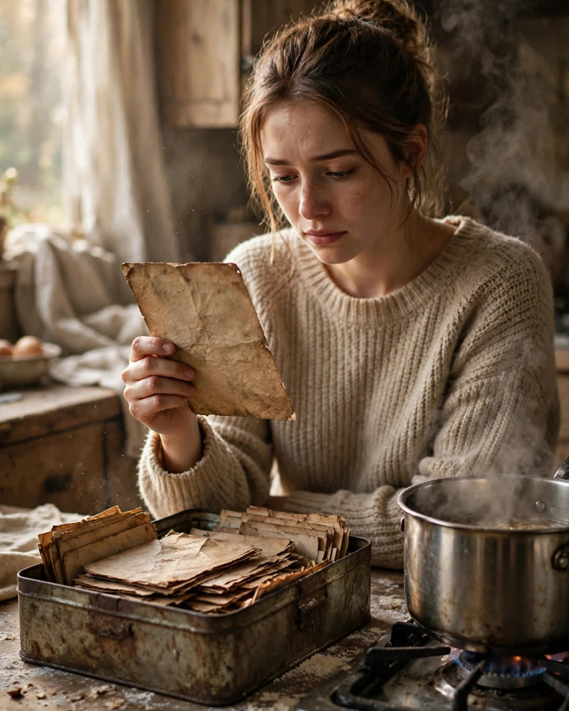

The Recipe Card Stains
A Clipp Kaili original story

Every stain on my grandmother's recipe cards is a story, and the year after her funeral, I cooked through every single one.
The cards live in a tin box that smells like vanilla and old paper, written in Grandma Ruth's looping hand, most of them splattered, butter-spotted, or ringed with something brown that predates me. When we cleaned out her house, my aunts took the china and my cousins took the photo albums. I asked for the tin box, and everyone looked relieved, the way families do when the sentimental one volunteers for the worthless treasure.
Card one: chicken and dumplings, with a gravy thumbprint right over the word simmer. That stain, my mother told me, was from the night in 1989 when the power went out in an ice storm and Grandma cooked by candlelight for nine neighbors whose pipes had frozen. "She fed half the street that week," Mom said. "The thumbprint is from checking if it was hot. She checked everything for everybody else first."
Card seven: lemon bars, dusted with a permanent ghost of powdered sugar. That was my parents' first anniversary cake-that-wasn't — Grandma discovered, one hour before dinner, that my father had proposed with a ring he was still paying off and no money for a celebration, so she baked lemon bars, stacked them in a tower, and put a candle in the top one. "A cake is just bars with confidence," she'd said.
I cooked a card a week, every Sunday, all year. Beef stew for the card where her writing goes shaky, because she'd been copying it down while holding my newborn brother. Peach cobbler for a card scorched at one corner — the summer the oven caught a towel on fire and Grandpa proposed a second time, in the smoke, because he said nearly losing the kitchen reminded him not to waste Tuesdays.
Some Sundays I cried into perfectly good mashed potatoes.
Grief, I learned, has a flavor, and it goes away one meal at a time — not because you forget, but because your hands start remembering for you.
The last card in the box has no title. No ingredients. Just a list of instructions in her hand, steady and plain:
"When she makes this, she'll know. Don't measure the cinnamon. She always adds too much and she's right to. Let her burn the first batch. I did. Stand close but don't hover. Hand her the good spoon. Tell her the kitchen is hers now. It always was going to be."
It was her cinnamon rolls. My favorite. The ones she'd never once let me watch her make because, she said, some things a girl has to arrive at on her own time.
I made them on the fifty-second Sunday. I added too much cinnamon. I burned the first batch — the bottoms, just like she said. And standing in my kitchen with smoke in the air and flour on my sleeves, I laughed out loud in an empty room, because she had known. She had written me a recipe that wasn't about rolls at all. It was instructions for the year I would need them most, hidden in a tin box, under a thumbprint of gravy.
Her cards are stained because her life was full.
Now mine are starting to stain too.
This story is a work of fiction, written to touch hearts and bring families closer.
← Back to all stories